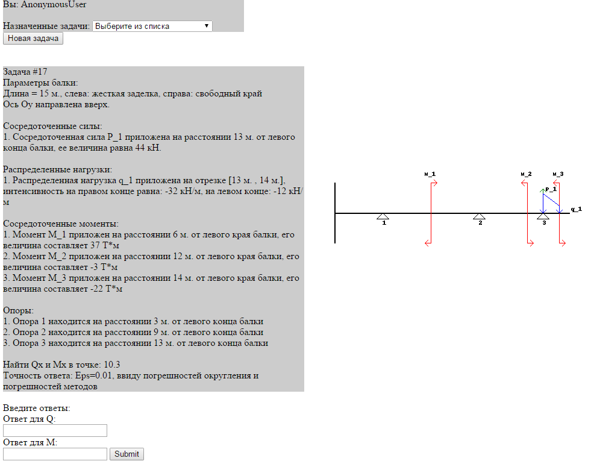

Strength of materials automated testing system
http://ivzaitsev.pythonanywhere.com/
Currently has 4 types of tasks: bending of hyperstatic beams, stretching of isostatic rods, twisting of isostatic rods, calculating moments of inertia for various figures.
The system has a built-in generator for tasks which also serves as a solver.
User(i.e student) requests a new task and tries to solve it by submitting the answer. When generated, the system also solves the task and stores all its parameters in a database. Upon submitting his answer, the student immediately gets his result: right\wrong, and his attempt at solving is stored in a database. Any user can get his own stats of solving attempts and appointed tasks.
A user with admin privileges(i.e teacher) has access to the same things, plus 2 additional pages: another stats page, where any user can be selected and stats for this user will be displayed; and a page where he can select any task and it will be displayed with an answer.
Tester page example: 
Android Beam
http://ivzaitsev.pythonanywhere.com/
Simple app for calculating various types of loads on a beam.
This app was created during my fourth year in SSU.
It was made to show that simple beam calculations, such as calculating shear force and bending moment, could be done on a smartphone.
The paper is available at https://drive.google.com/file/d/0B9XZLx63MX2NTTlMLTNXY0tXQVE/edit?usp=sharing.
Presentation is available at https://drive.google.com/file/d/0B9XZLx63MX2NeWtESno1bFBRVW8/edit?usp=sharing
Images: